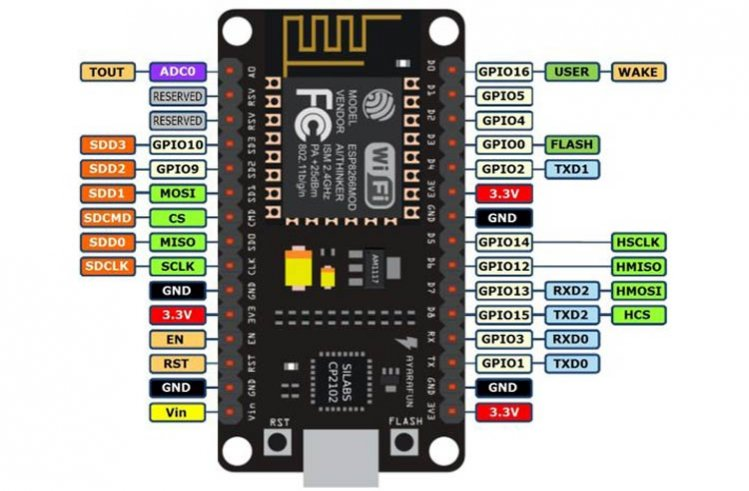

Pinout configuration

The NodeMCU ESP8266 development board comes with the ESP-12E module containing the ESP8266 chip having Tensilica Xtensa 32-bit LX106 RISC microprocessor. This microprocessor supports RTOS and operates at 80MHz to 160 MHz adjustable clock frequency. NodeMCU has 128 KB RAM and 4MB of Flash memory to store data and programs. Its high processing power with in-built Wi-Fi / Bluetooth and Deep Sleep Operating features make it ideal for IoT projects.
NodeMCU can be powered using a Micro USB jack and VIN pin (External Supply Pin). It supports UART, SPI, and I2C interface.
NodeMCU ESP8266 Specifications & Features
- Microcontroller: Tensilica 32-bit RISC CPU Xtensa LX106
- Operating Voltage: 3.3V
- Input Voltage: 7-12V
- Digital I/O Pins (DIO): 16
- Analog Input Pins (ADC): 1
- UARTs: 1
- SPIs: 1
- I2Cs: 1
- Flash Memory: 4 MB
- SRAM: 64 KB
- Clock Speed: 80 MHz
- USB-TTL based on CP2102 is included onboard, Enabling Plug n Play
- PCB Antenna
- Small Sized module to fit smartly inside your IoT projects
The NodeMCU ESP8266 development board comes with the ESP-12E module containing the ESP8266 chip having Tensilica Xtensa 32-bit LX106 RISC microprocessor. This microprocessor supports RTOS and operates at 80MHz to 160 MHz adjustable clock frequency. NodeMCU has 128 KB RAM and 4MB of Flash memory to store data and programs. Its high processing power with in-built Wi-Fi / Bluetooth and Deep Sleep Operating features make it ideal for IoT projects.
NodeMCU can be powered using a Micro USB jack and VIN pin (External Supply Pin). It supports UART, SPI, and I2C interface.